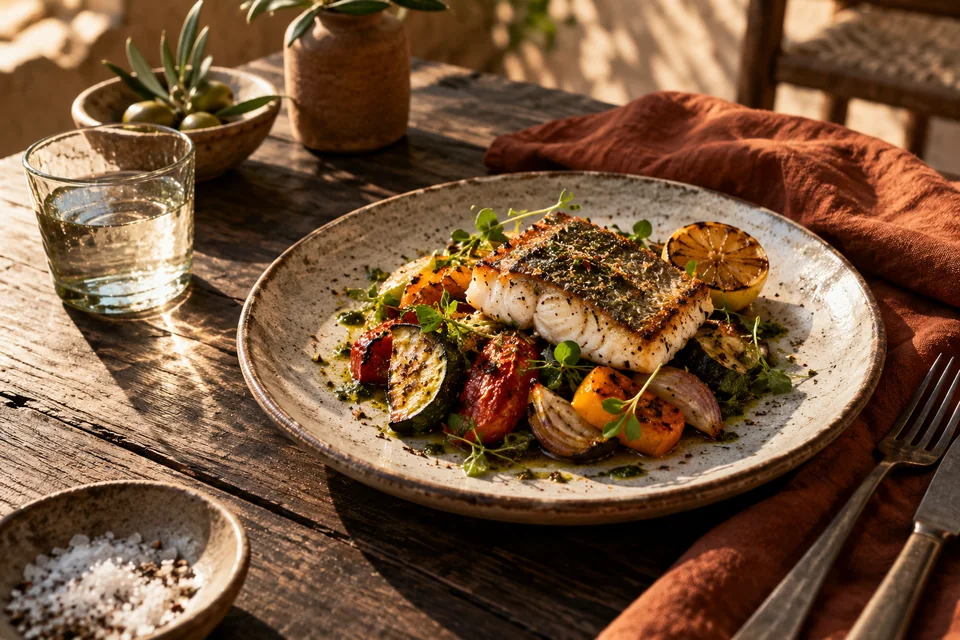

Fotos que abren el apetito.
Fotografía y vídeo de tus platos, tu local y tu equipo. Material propio para la web, la carta y las redes, en lugar de imágenes de banco.
- Foto + vídeo
- Dron
- Redes sociales
Estudio de diseño web y contenido · Tenerife
Tu carta, tus horarios y tus fotos.
Donde tu cliente los busca.
Trabajamos con restaurantes, guachinches y pequeños negocios de la isla: una web clara que se ve bien en el móvil y fotografías propias que dan ganas de entrar.

Trato directo.
Hecho en Tenerife.
01 / Lo que hacemos
Cuatro cosas que hacemos bien, pensadas para restaurantes, guachinches y comercios de la isla. Puedes empezar por una sola.
Fotografía y vídeo de tus platos, tu local y tu equipo. Material propio para la web, la carta y las redes, en lugar de imágenes de banco.
Carta, horarios, ubicación y contacto en una web clara y rápida, pensada para el móvil y enlazada con tu ficha de Google.
Carta digital que se abre escaneando el código de la mesa. En varios idiomas, con alérgenos, y se actualiza sin reimprimir nada.
Expositores NFC para mesa o barra: el cliente acerca el móvil y se abre la página de reseñas de tu ficha de Google. Te los dejamos configurados y funcionando.
Especialmente para restaurantes, guachinches, cafeterías y comercios de Tenerife. Si tu negocio es de otro tipo, cuéntanoslo y lo vemos.
02 / Trabajos
Cartas digitales, webs y contenido para hostelería y marcas de Tenerife. Puedes abrirlos y verlos funcionando.
Restaurante · Santa Cruz
Bar y pizzería cubana en Santa Cruz. Su cocina, su carta y cómo llegar, en una web que se abre rápido desde el móvil y sale en las búsquedas de la zona.
Web de restaurante · SEO localHostelería · Cuatro locales
Plataforma web para los cuatro guachinches del grupo — Como en Casa, La Basílica, La Casa del Mago y El Descarado. Una sola aplicación gestiona las cartas de todos los locales.
Web multilocal · Panel de administraciónHostelería · Candelaria
Carta digital que el cliente abre escaneando el código de la mesa. Se lee bien en el móvil, cambia de idioma y se actualiza sin reimprimir nada.
Carta digital · Multiidioma · QRTienda online · Moda
Tienda de ropa con catálogo, tallas, carrito y cálculo de envío. En dos idiomas, para vender también fuera de la isla.
Comercio electrónico · MultiidiomaMarca de producto
Web de marca para velas artesanales, con carrusel de producto y una identidad cálida. Carga rápida y pensada para el móvil.
Web de marca · AstroAdemás
Tres conceptos para imaginar otros formatos. Son ejemplos creativos con imágenes generadas por IA; no son encargos ni resultados de clientes.
Concepto / Turismo
Concepto / Gastronomía Concepto / Producto
Concepto / ProductoLa tecnología ayuda.
La mirada lo diferencia.
03 / El estudio
Aireal une dos formas de mirar: la de quien cuenta una historia con imágenes y la de quien construye cómo funciona por dentro.
Trabajamos desde Tenerife en fotografía, webs y cartas digitales para negocios de la isla. La estrategia y la ejecución comparten conversación, para que el resultado tenga sentido de principio a fin.
Fotografía con Nikon Z50, vídeo estabilizado, captura aérea y sonido inalámbrico. Elegimos el equipo según la pieza, no al revés. Las tomas con dron se valoran según ubicación, condiciones y autorizaciones necesarias.
También construimos software
Otros proyectos de desarrollo propios.
04 / Precios
Precios de partida para que sepas si te encaja antes de escribirnos. El presupuesto final se cierra por escrito, con entregables, plazo y revisiones.
Para renovar tus imágenes
desde 350 €
Media jornada en tu local
Fotografías propias de tu carta, tu espacio y tu equipo, listas para publicar.
Para tenerlo todo resuelto
desde 1.550 €
Según el alcance que acordemos
Tu web hecha con tus propias fotografías. Una sola conversación para todo.
Para que te encuentren
desde 1.200 €
Plazo acordado por escrito
Una web clara que se ve bien en el móvil, que es donde te buscan.
Dos productos pequeños, rápidos de poner en marcha y pensados para hostelería.
Para dejar de reimprimir
desde 350 €
Carta, idiomas y códigos QR incluidos
Tu carta en el móvil del cliente, que se abre escaneando el código de la mesa.
Para conseguir más reseñas
A medida
Según el número de expositores
Expositores para mesa o barra que abren tu página de reseñas de Google con solo acercar el móvil.
Precios de partida antes de los impuestos aplicables. Para reservar fecha se abona una señal del 50 %, y el resto a la entrega. Dominio, alojamiento, licencias y publicidad se pagan aparte. Una ronda de cambios por entrega. Producción presencial en Tenerife; desplazamiento y alcance se confirman en la propuesta.
Si tu web ya funciona, podemos encargarnos cada mes del contenido.
05 / Así trabajamos
Tu negocio, tu cliente y el problema que merece resolverse primero.
Una propuesta con entregables, calendario, coste y una métrica útil.
Grabamos, diseñamos o conectamos. Revisas antes de publicar o activar.
Medimos lo ocurrido y elegimos juntos el siguiente ajuste.
Antes de empezar
Si lo prefieres, sí: podemos dejarte un panel sencillo para editar platos y precios, o encargarnos nosotros de los cambios. Lo decidimos en la propuesta según cada cuánto cambie tu carta.
El plazo se fija por escrito en la propuesta, antes de empezar. Una carta digital o unos expositores de reseñas se resuelven bastante antes que una web completa con sesión de fotos.
Los ponemos plato a plato a partir de la información que nos das tú. No los copiamos a ojo de una carta impresa: un alérgeno mal puesto no es un fallo de diseño, es un problema de seguridad alimentaria. Antes de publicar, la carta la revisas y la validas tú.
Enlazamos tu web y tu carta con tu ficha de Google, para que quien te busque encuentre carta, horario y cómo llegar. Si aún no tienes ficha, te ayudamos a crearla. Aparecer en los primeros puestos depende de muchos factores, y nadie honesto te lo puede garantizar.
Sí. El expositor solo abre la página de reseñas de tu ficha, igual que si el cliente te buscara. Lo que Google no permite es ofrecer descuentos o regalos a cambio de una reseña, ni pedírsela solo a los clientes contentos, así que los dejamos configurados para que cualquiera pueda opinar.
El dominio y el alojamiento van a tu nombre y se pagan aparte; te explicamos su coste antes de empezar. Si quieres que nos encarguemos de los cambios y del mantenimiento cada mes, lo acordamos en la propuesta. No hay cuotas escondidas.
Sí: los de la sección Trabajos son proyectos reales y puedes abrirlos. Las tres imágenes de «Ideas para tu negocio» son conceptos generados con IA para inspirarte; no son encargos ni resultados de clientes.
La fotografía, el vídeo y la instalación de expositores son presenciales en Tenerife. La web y la carta digital las podemos hacer a distancia. Un trabajo fuera de la isla se valora por separado.
06 / El siguiente paso
Cuéntanos qué haces y qué te gustaría mejorar. Con eso podemos empezar.
williamluisgonzalez@gmail.comTenerife, Islas Canarias · Proyectos en remoto